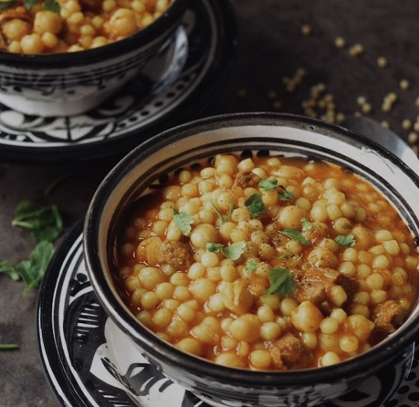
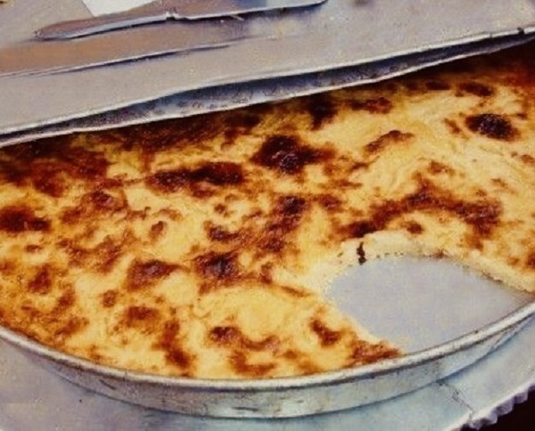
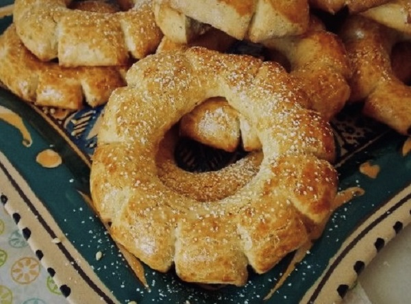

Découvrire les plats Emblématique du Nord-Est du Maroc
Oujda : Une cuisine orientale
La cuisine d’Oujda, située à l’extrême nord-est du Maroc, reflète les influences méditerranéennes, amazighes et algériennes.
Berkoukch
Le berkoukch est une spécialité souvent préparée pendant les mois froids. Il est constitué de grosses billes de semoule roulées à la main, légèrement plus grandes que le couscous classique. Ces billes sont cuites à la vapeur puis mélangées à une sauce onctueuse, préparée avec des légumes comme les navets, les carottes, les tomates, et des pois chiches. La sauce est enrichie de viande (souvent de l’agneau) et parfumée d'épices telles que le ras-el-hanout, le paprika et le gingembre. Ce plat, symbole de convivialité, est généralement servi lors des rassemblements familiaux et incarne l’authenticité culinaire oujdie.
Karan
Le karan, héritage des liens historiques entre Oujda et l’Algérie, est une tarte savoureuse préparée à base de farine de pois chiches, d'eau, d'œufs et d’huile d’olive. La pâte liquide est versée dans un plat large et cuite au four jusqu'à ce qu’elle forme une couche légèrement dorée à l’extérieur et fondante à l’intérieur. Elle est servie chaude, saupoudrée de cumin, de sel et parfois accompagnée d'une touche de harissa. Simple et économique, le karan est un aliment de rue incontournable à Oujda, souvent vendu par les marchands ambulants et consommé comme collation rapide ou petit-déjeuner.
kaak
Le Kaâk d'Oujda est un biscuit traditionnel marocain, originaire de la ville d'Oujda. Ces biscuits en forme d'anneaux dentelés se caractérisent par une texture à la fois croquante et tendre, et sont souvent parfumés avec des graines de sésame et d'anis. Elles sont souvent préparés lors de fêtes et de célébrations, reflétant la richesse de la tradition culinaire marocaine.
Explorez la diversité des saveurs dans autres villes du Maroc
Tanger, Fez, Marrakech, Ouarzazate et Laayoune
Bon voyage à travers les saveurs du Maroc !